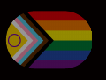
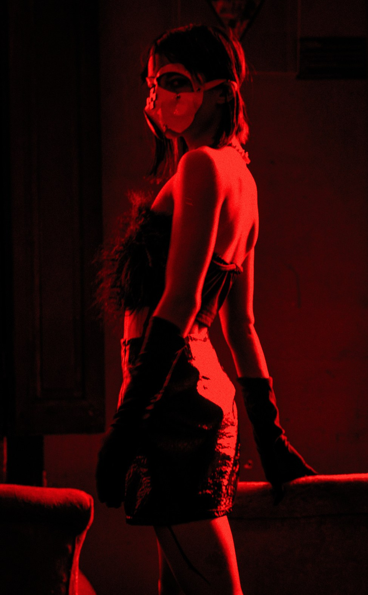
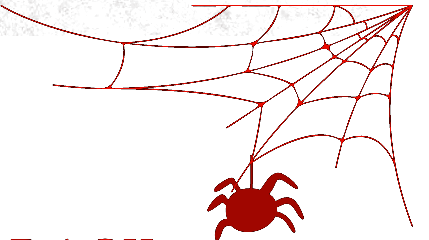

SWITCHER E EXPERIMENTALISTA
BondageDisciplinaMasoquismoSubmissão



Tenho interesse por fetichismo desde cedo.
Enquanto não pude praticar, me dediquei ao estudo por meio de livros e podcasts.
O conhecimento teórico só se aprimora de fato com a vivência e a experimentação.
Ao ter contato com pessoas do meio, conheci o BDSM na pele.
Com embasamento teórico, experimentei diversas práticas para compreender a perspectiva de cada papel.
Me interessei por dominação e comecei como submissa, mantendo essa essência até hoje.
Sempre acreditei que para dominar é preciso compreender o lado do submisso e vice-versa.
Já conduzi sessões no papel de dominadora, mas nunca me senti atraída por essa posição.
Minha imagem forte não me torna menos submissa.
Atualmente, busco transmitir conhecimento sobre práticas seguras a curiosos apaixonados pelo tema, com o propósito de orientar e educar, para que possam trilhar um caminho melhor do que o meu.